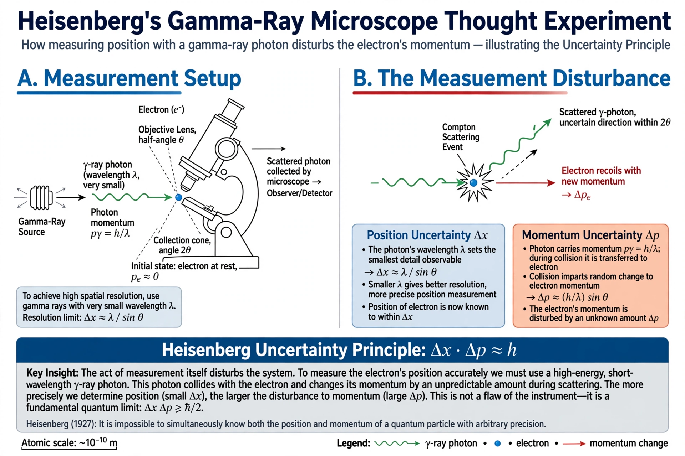

Observer effect (physics)

In physics, the term observer effect refers to changes that the act of observation makes on the phenomenon being observed. A familiar example is checking the pressure of a tyre with a gauge, which necessarily lets out some air and so changes the pressure. In quantum mechanics the term is often associated with the disturbance of a system by measurement, but physicists emphasise that the effect does not require a conscious observer: any interaction that extracts information from a system — for example a photon scattering off an electron — constitutes a "measurement" and disturbs the system accordingly.
| Domain | Physics, especially quantum mechanics |
|---|---|
| Example | Detecting an electron alters its momentum |
| Related concepts | Measurement problem; Heisenberg uncertainty principle; quantum decoherence |
In quantum mechanics
In the double-slit experiment, light or electrons produce an interference pattern when no attempt is made to determine which slit each particle passes through; when a detector records the path, the interference pattern disappears. This behaviour is often popularly described as the observer "collapsing" the system by looking at it, but the effect is fully accounted for by physical interaction and entanglement with the measuring apparatus, leading to decoherence, without any role for consciousness. The observer effect is sometimes confused with the Heisenberg uncertainty principle; the two are distinct, since the uncertainty principle is a property of quantum states themselves rather than a consequence of clumsy measurement, although measurement disturbance relations have been studied in their own right in modern work by Ozawa and others.
Other sciences
Analogous effects occur elsewhere: in electronics, attaching a voltmeter changes the circuit under test; in biology, tagging or sampling animals can alter their behaviour; and in the social sciences the related Hawthorne effect describes people modifying their behaviour when they know they are being studied.